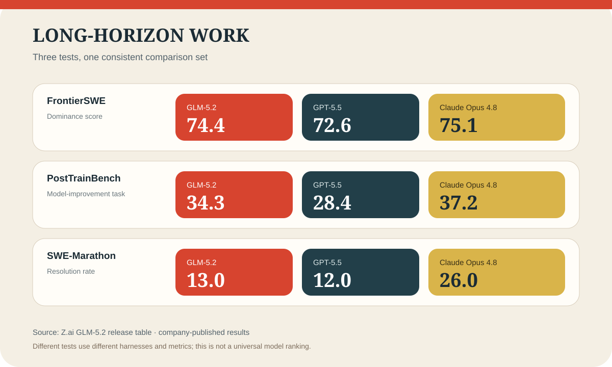
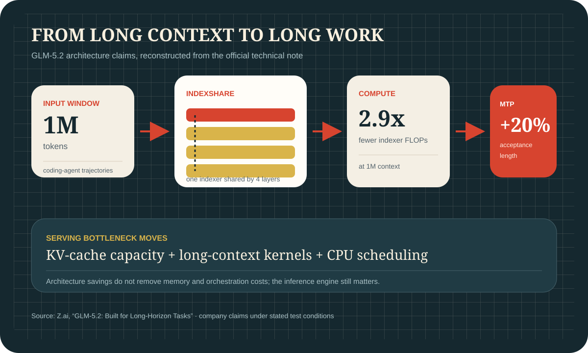

중국 GLM-5.2, 그래프로 다시 보면 더 잘 보인다
GLM-5.2는 범용 지식 평가의 절대 1위가 아니라 장시간 코딩과 에이전트 과제에서 급격히 선두권에 들어온 모델입니다. Z.ai가 공개한 벤치마크와 독립 리더보드를 함께 보면 어디서 강한지, 어디서 아직 밀리는지, 왜 중국 오픈 모델의 질적 점프로 평가받는지가 선명해집니다.
Quick Read
핵심은 “모든 벤치 1위”가 아니라 “장기 코딩 과제에서 갑자기 최상위권”이다
GLM-5.2는 범용 reasoning 전체 최강 모델은 아니다. 하지만 장시간 코딩, 에이전트형 과제, 긴 문맥 작업에서는 GPT-5.5와 Gemini 3.1 Pro를 위협하거나 일부 항목에서 앞서는 그림이 나온다. 그래서 이 모델은 “중국 오픈 모델의 질적 점프”로 읽힌다.
두 장으로 보는 성능과 구조 변화
첫 도표는 Z.ai가 공개한 전체 벤치마크 표에서 장기 과제 세 항목만 같은 비교군으로 다시 구성했다. 두 번째 도표는 1M 토큰 문맥을 다루기 위해 회사가 설명한 IndexShare와 MTP 개선을 구조적으로 정리했다.


장기 과제 비교에서 제일 중요하게 봐야 할 것
Long-Horizon Task Evaluation 그래프는 이번 GLM-5.2 이슈의 핵심이다. 여기서 사람들을 놀라게 한 것은 HLE나 GPQA 같은 전통적 지식형 벤치가 아니라, `FrontierSWE`, `PostTrainBench`, `SWE-Marathon`처럼 오래 걸리고 끝까지 밀어붙여야 하는 과제형 벤치다.
이 그래프에서 GLM-5.2는 FrontierSWE 74.4, PostTrainBench 34.3, SWE-Marathon 13.0을 기록한다. 숫자 자체보다 더 중요한 건 비교 방향이다. GPT-5.5를 FrontierSWE와 PostTrainBench에서 앞서고, GLM-5.1과의 격차도 매우 크다. 즉 “장기 코딩 과제”에서 질적 점프가 있었다는 메시지를 가장 강하게 던지는 그래프다.
전체 벤치마크 표는 “범용 코딩 성적표”에 가깝다
LLM Performance Evaluation 그래프는 GLM-5.2가 어디서 강하고 어디서 아직 약한지 더 균형 있게 보여준다. SWE-bench Pro 62.1, Terminal-Bench 2.1 81.0, ProgramBench 63.7, MCP-Atlas 77.0은 충분히 강하다. 반면 NL2Repo 48.9, DeepSWE 46.2는 아직 Claude Opus 4.8과 GPT-5.5에 밀린다.
그래서 전체 수치를 함께 보면 결론은 명확하다. GLM-5.2는 “모든 걸 다 이기는 만능 1위”라기보다, 특정 코딩·에이전트 구간에서 최상위권으로 진입한 모델이다. 오히려 이 점이 더 현실적이고, 과장 없는 해석에 가깝다.
effort level은 왜 체감 성능이 달라지는지 보여준다
Agentic Coding Performance by Effort Level 그래프는 GLM-5.2가 GLM-5.1에서 얼마나 뛰었는지를 가장 직관적으로 보여준다. Non-Thinking 구간에서도 올라가지만, High와 Max 같은 높은 effort 구간에서 점프 폭이 더 크다. 즉 이 모델은 짧은 단답형보다는 `길게 생각하고 툴을 써가며 끝까지 푸는` 작업에서 더 강해졌다는 인상을 준다.
이게 중요한 이유는 최근 개발자들이 AI 코딩 도구를 평가할 때, 단순 정답률보다 `긴 리포지토리에서 얼마나 버티는지`, `실패했다가 다시 시도하는지`, `출력 토큰을 길게 써도 무너지지 않는지`를 더 중요하게 보기 때문이다.
구조 변화는 왜 점수가 올랐다고 주장하는지 설명한다
아키텍처 그래프는 기술적 설명이다. 이건 독자가 전부 이해해야 하는 그래프는 아니지만, 적어도 Z.ai가 단순 튜닝이 아니라 구조 변경을 통해 효율과 수용 길이를 같이 올렸다고 말하고 있다는 점은 보여준다. 특히 lower FLOPs, higher MTP acceptance length 같은 문구는 “같은 예산으로 더 길게, 더 효율적으로 간다”는 메시지로 읽힌다.
공식 그래프와 별도로 꼭 열어봐야 할 리더보드
리더보드 바로 열기
본문의 자체 도표는 Z.ai가 발표한 수치를 읽기 쉽게 다시 구성한 것이다. FrontierSWE와 PostTrainBench의 순위와 측정 방식은 각 공식 리더보드에서 함께 봐야 회사가 고른 비교 구도에만 의존하지 않을 수 있다.
| 항목 | 보는 포인트 |
|---|---|
| FrontierSWE 74.4 | GPT-5.5 72.6보다 높고, Claude Opus 4.8 75.1 바로 아래다. |
| PostTrainBench 34.3 | GPT-5.5 28.4보다 높다. 장기 작업 안정성에서 강한 인상을 준다. |
| Terminal-Bench 2.1 81.0 | GLM-5.1 63.5에서 크게 뛰었다. 실제 코딩형 워크플로 개선 폭이 크다. |
| GLM-5.1 대비 | 단순 소폭 개선이 아니라 세대 업그레이드처럼 보일 정도로 점프 폭이 크다. |
원자료 바로 보기
- Z.ai 공식 원문: 그래프와 설명 전체 보기
- 그래프 1 직접 열기: Long-Horizon Task Evaluation
- 그래프 2 직접 열기: LLM Performance Evaluation
- 그래프 3 직접 열기: Agentic Coding Performance
- 그래프 4 직접 열기: Architecture Changes
- GLM-5.2 모델 카드 바로 보기
{kind=link}
{kind=link}
{kind=link}
{kind=link}
공식 그래프는 각 평가의 비교 모델과 설정을 한눈에 보여주지만 모두 Z.ai가 선택해 제시한 자료다. 모델 카드의 세부 설정과 독립 리더보드를 함께 열어야 수치가 나온 조건과 최신 순위 변화를 확인할 수 있다.
한 줄 결론
GLM-5.2를 가장 잘 설명하는 방식은 “중국 오픈 모델이 모든 벤치 1위를 찍었다”가 아니다. 더 정확한 문장은 “장기 코딩 과제와 에이전트형 작업에서, 갑자기 프런티어 모델 바로 옆까지 올라왔다”이다. 본문의 장기 과제 비교판과 구조도를 함께 보면 성능 주장과 그 근거가 어디까지인지 구분할 수 있다.
Comments
댓글